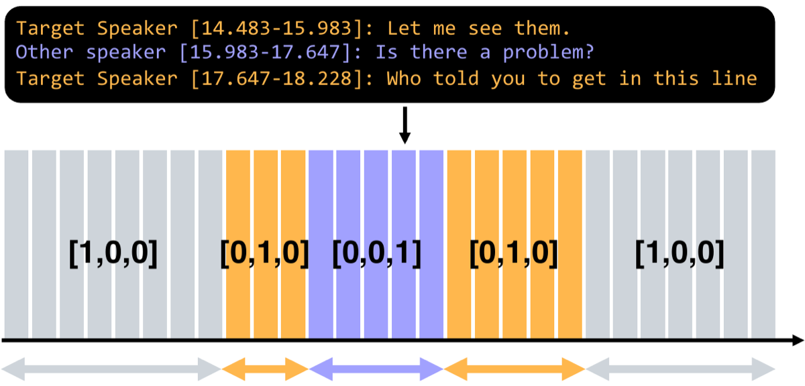
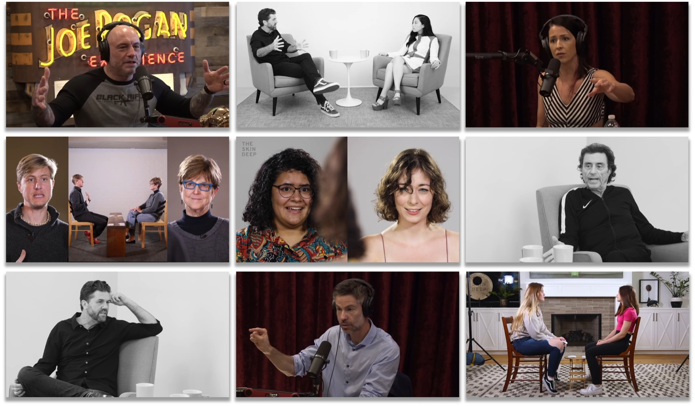
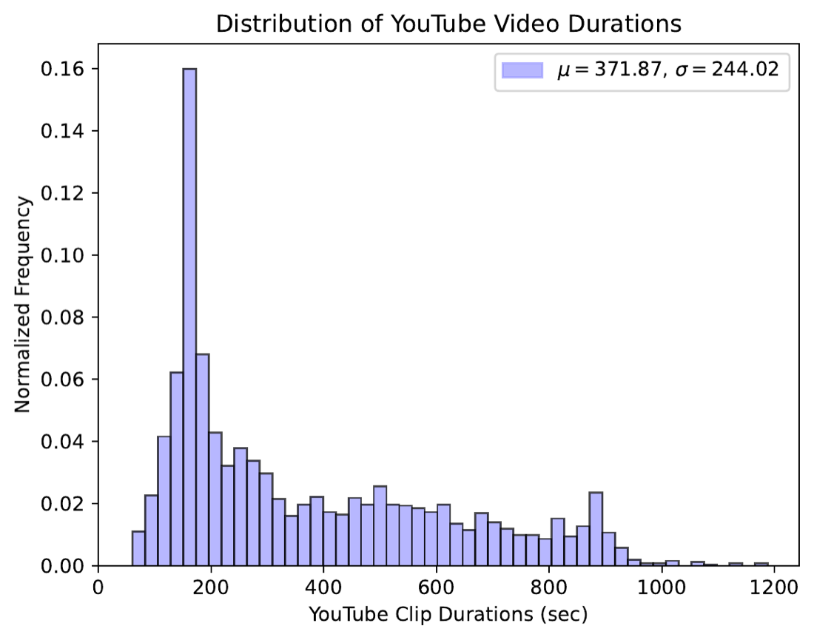

NAACL 2025 Findings
EgoSpeak: Learning When to Speak
for Egocentric Conversational Agents
in the Wild
♣Yonsei University · ♢Multimodal AI Lab., NC Research, NCSOFT
A conversational agent has to know not just what to say, but when to say it. We propose EgoSpeak, a framework that decides when to speak from a first-person video stream by anticipating the camera wearer's next utterance, the way a real-world social robot would. EgoSpeak unifies four capabilities most prior work skips, egocentric viewpoint, RGB processing, online inference, and untrimmed video, and we evaluate it on EasyCom and Ego4D with optional pretraining on YT-Conversation, a 41-hour collection of in-the-wild YouTube dialogues. Even with a tight 200 ms decision step, our predictive model nearly doubles the average precision of a silence-threshold baseline on both datasets.
- 60.6%best mAP, EasyCom
- 69.2%best mAP, Ego4D
- 41 hYT-Conversation pretraining
- 13.9kFPS, RNN model on RTX 3090
What's missing in prior turn-taking work
| Method | Egocentric | RGB | Online | Untrimmed |
|---|---|---|---|---|
| Skantze (2017) | — | — | ✓ | — |
| VAP / Ekstedt (2022) | — | — | ✓ | — |
| Kurata (2023) | — | ✓ | — | — |
| Fatan (2024) | ✓ | ✓ | — | — |
| EgoSpeak (Ours) | ✓ | ✓ | ✓ | ✓ |
Four capabilities for in-the-wild conversation
Most existing turn-taking studies relax at least one of these. We argue all four are needed for a useful real-world agent.
① First-person view. The agent reasons from what it actually sees, not a third-person camera.
② RGB processing. Gaze, body language, and scene context are visible cues for turn boundaries.
③ Online inference. A decision is emitted every 200 ms with no future lookahead.
④ Untrimmed video. Long stretches of silence and sporadic exchanges are kept intact.
Anticipate the wearer's next utterance
At each timestep, EgoSpeak ingests RGB and audio features extracted at 5 FPS, encodes a temporal window with a Transformer / GRU / Mamba backbone, and emits a per-frame distribution over three classes: background, target speaker, and other speaker. With anticipation length α = 10 timesteps, the model commits to speaking up to 2 s before the wearer's actual onset, giving downstream LLMs the head start they need for natural turn-taking.
Frame-level labels from transcript timestamps
Per-frame speech labels are expensive to annotate by hand. We convert each EasyCom and Ego4D transcript into a one-hot timeline at 200 ms resolution: target when the camera wearer is speaking, other for any other voice, background for silence.

YT-Conversation: in-the-wild pretraining
EasyCom and Ego4D are small for a model that has to learn turn-taking. We curate YT-Conversation, 414 YouTube videos spanning 41 hours of podcasts, interviews, and casual dialogues, then use Pyannote voice-activity detection to generate pseudo speech / no-speech labels at our 200 ms resolution for large-scale pretraining.


What the model actually does, frame by frame
What we found
① Multimodal beats unimodal, mostly on EasyCom. Transformer A+V reaches 58.7% mAP on EasyCom vs. 56.9% audio-only and 51.0% visual-only. On Ego4D the gap narrows: audio alone already carries most of the signal.
② Optical flow is a free win. Adding TV-L1 flow as a third modality consistently improves every backbone on EasyCom, suggesting motion cues complement static visual features for predicting speech onsets.
③ Long context helps; long short-term context hurts. Growing the long-term window monotonically improves the Transformer, but enlarging the short-term window degrades it, evidence that recent frames carry the most predictive signal and extra recent context is mostly noise.
Predicting speech onsets frame-by-frame outperforms threshold-based silence detection by 25 to 40 AP points on both datasets, even with a 200 ms decision step.
BibTeX
@inproceedings{kim2025egospeak,
title = {EgoSpeak: Learning When to Speak for Egocentric Conversational Agents in the Wild},
author = {Kim, Junhyeok and Kim, Min Soo and Chung, Jiwan and Cho, Jungbin and Kim, Jisoo and Kim, Sungwoong and Sim, Gyeongbo and Yu, Youngjae},
booktitle = {Findings of the Association for Computational Linguistics: NAACL 2025},
year = {2025}
}